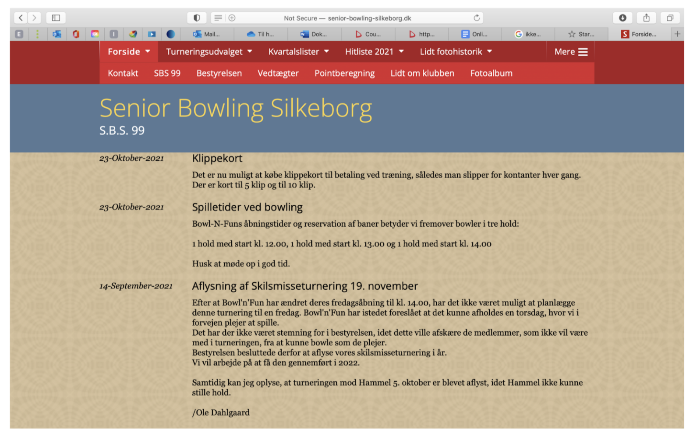
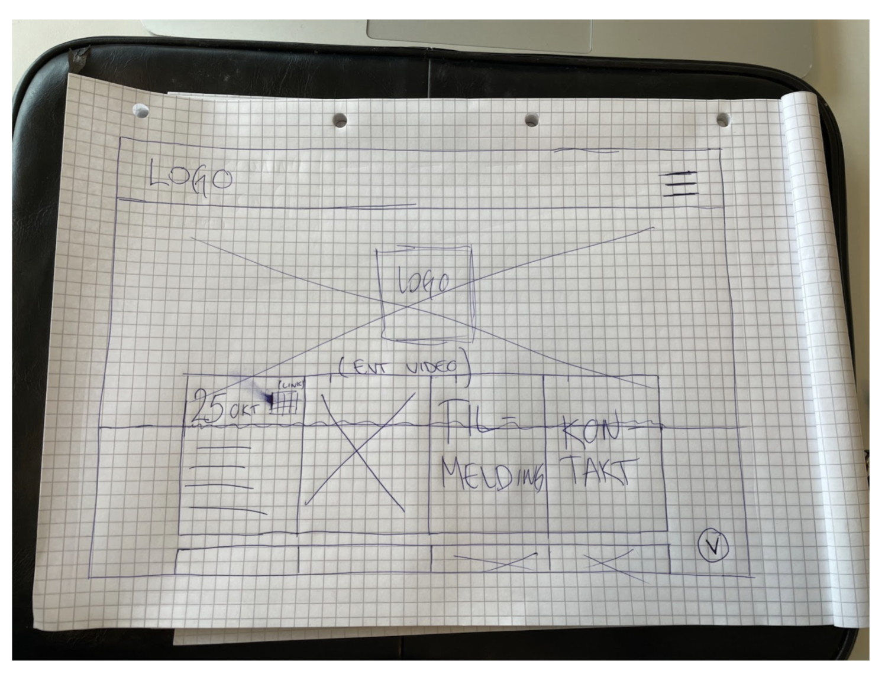

Online adfærd - adfærdsdesign
Sådan træffer vi beslutninger
Når vi træffer beslutninger er vores adfærd styret af to systemer
- System 1 personer som intuitivt, hurtigt og ukontrolleret træffer beslutninger
- System 2 personer som reflekteret, langsomt og kontrolleret træffer beslutninger
Når man ved hvad der styrer beslutningstagerens adfærd, kan man tilrettelægge kommunikationen på en mere effektiv måde.
Persuasion processes
Systemativ
- Logik og fornuft
- Opliste hvad produktet kan og fremhæve produktets kvaliteter
Heuristic
- Scarcity( fx nedtælling, last in stock)
- Authority (nogen der er kloge på emnet)
- kræver mindre indsats fra modtageren, for at forstå produktet
Do you trust me?
- Vi stoler på mennesker som er sympatisk, troværdig og ligner os selv
- Når man kan genkende sig selv i reklamen
Appearances matter
- Når en tandlæge i reklamen har sit arbejdstøj på tror vi mere på ham, end hvis han havde alm tøj på.
Hvordan påvirker og ændrer vi adfærden online?
Vi har i undervisningen arbejdet med hvordan forskellige måder hvorpå vi kan forbedre det vi lægger op på nettet. Vi har arbejdet med hvordan man skaber "fluency", hvordan man skaber en "killer website" og med konceptet "keep it simple"
Fluency
Repeat and rewind
- Når folk bliver ved med at høre det samme igen og igen
- et eksempel på dette kan være McDonalds’ slogan “I’m lovin’ it”, samt deres jingle. Det er let genkendeligt og man ved at det hører til der når man både hører og ser det.
Perceptual fluency
- Holde tingene simple for at gøre det nemmer at forstå
Linguistic fluency
- Holde teksterne simple og lette at forstå
Structure
- Kan hjælpes på vej med et godt slogan
Design a killer website
- Purpose - lave en hjemmeside der reflektere dit budskab i designet
- Design for trust - en flot hjemmeside skaber tillid
- Meet their needs - sørg for at hjemmesiden møder dine modtagers behov
- Clear messaging - sørg for at din tekster er korte og præcise
- User experience - hold designet gennem hele hjemmesiden. Det skal være nemt for bruger at komme i "mål" på din hjemmeside
- Intrinsic information - Hold dit website opdateret
- Accessibility - sørg for at dit website kan bruges på flest mulige devices
- Representational information - brug forklaringer, rigtige ord og beskrivelser
- Search engine optimisation - sørg for at din kode er ordenligt markeret og struktureret
- Contextual information - sørge for at du kommer på den rigtige portal i forhold hvor du befinder dig, i forhold til fx forskellige lande
- Interactivity - interaktivitet så folk kan være aktive på hjemmesiden og skabe dialog, fx facebook
- Video - spiller på følelserne, leder brugeren i den rigtige retning
- Keep your content updated - Sørg for at holde din side opdateret, fx ved en blog
- Call to action - noget du har lyst til at klikke ind på. Noget tilfredstillede at interagere med
- Test, test, test - sørg for at gennem teste din hjemmeside, så den passer til brugeren
- Respecting customer privacy - respekter brugerens privatliv og vær transparent med hvad bruger oplysningerne til
Keep it simple
- The F pattern - følg F mønstret, som betyder at man have sine mest informations rige ord først på siden.
- Attention is a scarce resource - opbygge et hierarki i tekster og overskrifter
- Advertising - sørg for at ens reklamer er relevante og rige på indhold
- Images - brug relevante billeder af høj kvalitet
Vi skulle efter at have arbejdet med de forskellige principper, finde et website som vi ikke mente fulgte de principper vi havde arbejdet med. I min gruppe valgte vi Senior-bowling-silkeborg.dk, da vi mente at der var flere ting man ville kunne arbejde videre med i forhold til principperne.

Vi gjorde siden mere simpel og overskuelig ved at lave links der går videre til siderne man skal bruge. Det er nemmere at holde styr på hvad man skal på siden og det er ikke så forvirrende mere.
